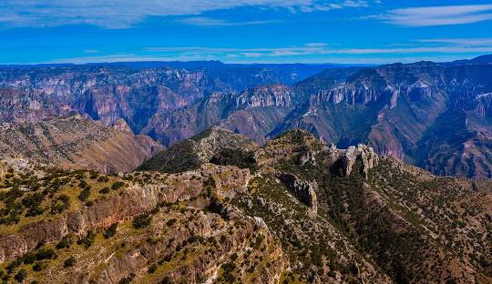
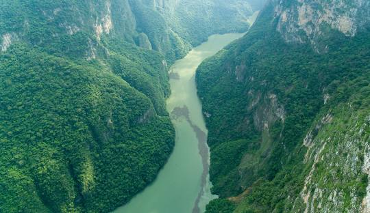
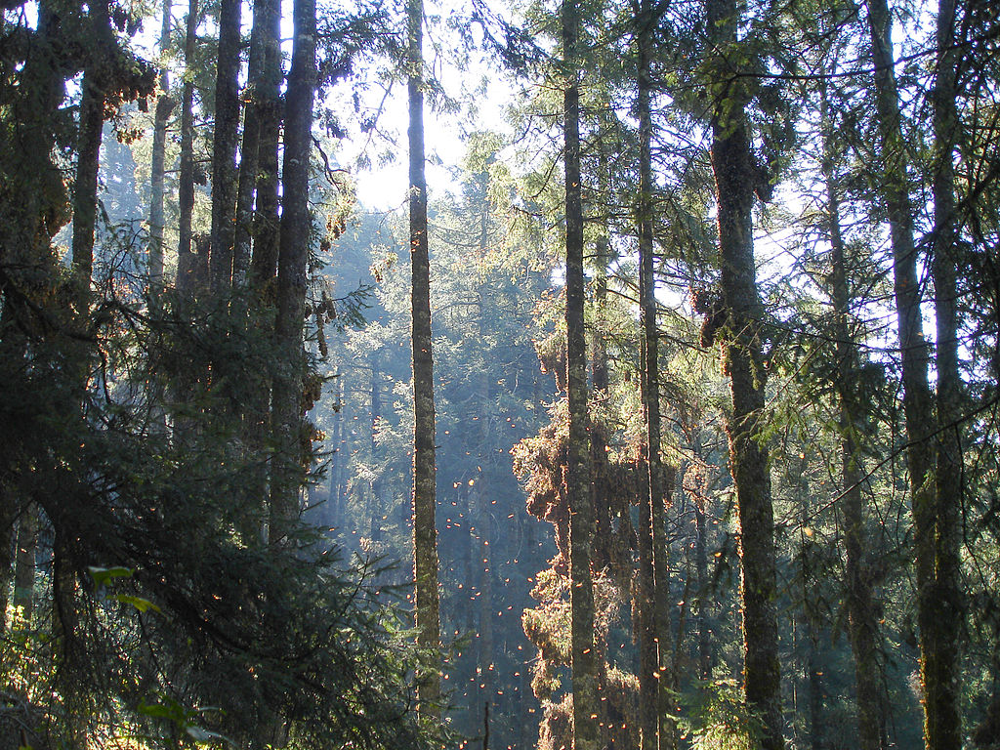
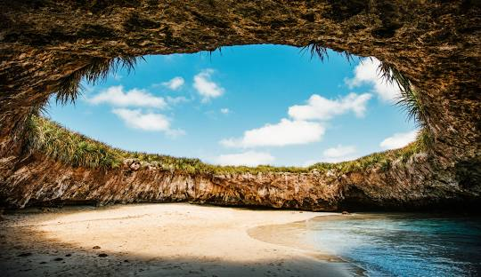
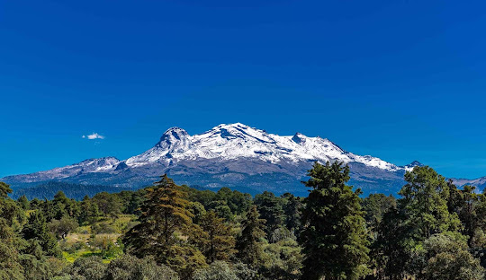
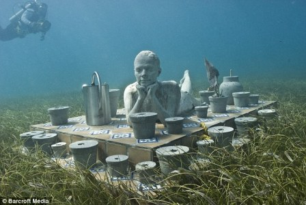
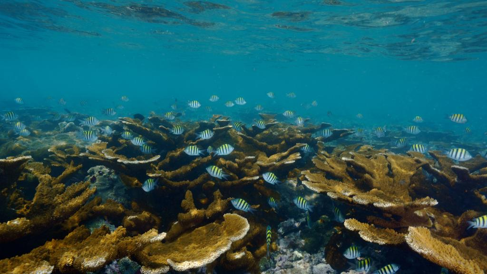

Barranca del Cobre (Chihuahua)
Un impresionante cañon, mas grande y profundo que el Gran cañon de Arizona.

Cañon del Sumidero (Chiapas)
Un cañón con imponentes paredes rocosas y el río Grijalva, donde se puede realizar un paseo en lancha.

Reserva de la Biósfera Mariposa Monarca (Michoacán)
Un lugar de refugio para la mariposa monarca, con una migración impresionante cada año.

Islas Marietas (Nayarit)
Un archipiélago con playas de arena blanca, arrecifes de coral y una gran variedad de vida marina.

Volcán Popocatépetl
Un volcán activo que ofrece vistas impresionantes y la posibilidad de hacer senderismo.

Museo Subacuático de Arte (Cancún y Isla Mujeres)
Un museo subacuático con esculturas de gran tamaño, que se ha convertido en un destino popular para buceadores y snorkelers.

Arrecifes de Veracruz
Un sistema de arrecifes de coral con una gran diversidad de vida marina.